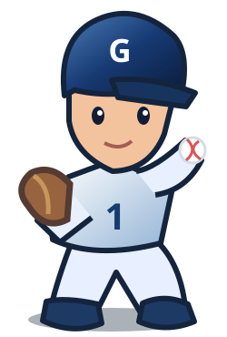
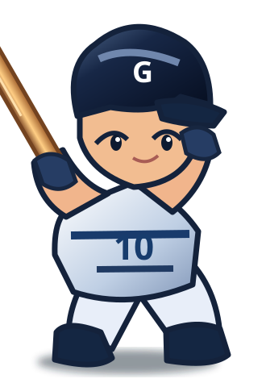

7 DAYS · HOME RUN CHALLENGE
抓準時機，一棒轟出全壘打！
每人每日 10 次打擊，累積積分爭奪冠軍。支援電腦、手機、Discord 內嵌瀏覽器。
活動日期—
目前進度—
今日剩餘10 / 10
🏟️HOME RUN
DERBY
DERBY
可直接在這個頁面登入 Discord，不需要先進入極限生存戰。
準備開球第 1 球
★ STAR RO BASEBALL PARK
得分0
全壘打0
安打0
打數0
今日已投0 / 10
剩餘球數10 / 10
🎯 瞄準球進入框中央


3
STAR RO BALLPARK · 2026
🎯 球進框時可揮棒
判定顏色🟢 全壘打🟣 三壘安打🔵 二壘安打🟡 一壘安打
完成暱稱設定後即可遊玩。
📜 遊戲規則
🎯 每日 10 次揮空也算一次
💥 全壘打 100 分抓準正中央時機，挑戰全壘打
🏃 安打 20～60 分一壘／二壘／三壘安打
🏆 7 天總積分排名同分比全壘打，再比安打